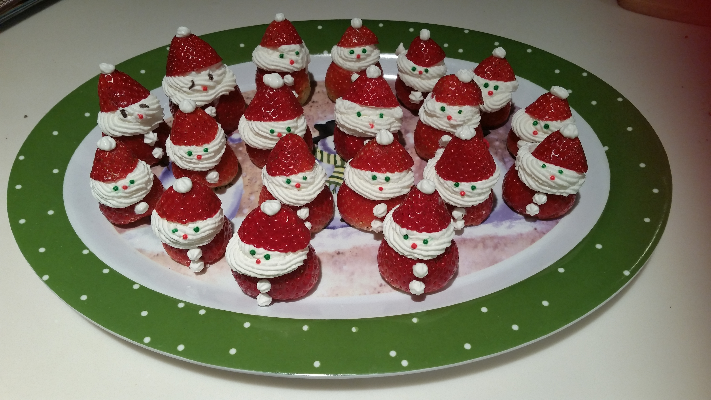

You can easily make these little Santas as a holiday dessert yourself. All you need are strawberries, whipped cream, and some chocolate sprinkles to turn a strawberry into a Santa. Your kids will love these yummy treats and can help put them together.
Ingredients
1 pint fresh strawberries, hulled
1 cup heavy whipping cream
1 tablespoon confectioners' sugar
1 tablespoon chocolate sprinkles
Directions
Step 1. Cut the hulled-side strawberries so they can stand up on a plate. Slice the tip off each strawberry to make the 'hat'; set aside.
Step 2. Beat cream and confectioners' sugar in a glass or metal bowl until soft peaks form. Lift your beater or whisk straight up: the whipped cream will form soft mounds.
Step 3. Spoon a large dollop of whipped cream on top of strawberry base for the 'face' and 'beard'. Set the 'hat' atop the 'face'. Add a dot of whipped cream, using a toothpick, on top of the 'hat' for the 'pom-pom' and 2 dots on the strawberry base for 'buttons'. Place 2 sprinkles on the 'face' for 'eyes'.
Nutrition Facts
Per Serving: 64 calories; protein 0.5g; carbohydrates 3.2g; fat 5.7g; cholesterol 20.4mg; sodium 6mg.